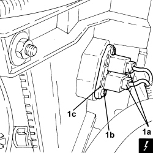
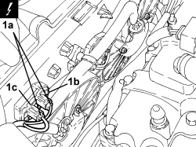
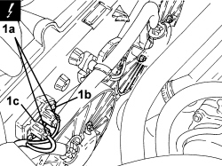

1088E20 RESISTOR FOR RADIATOR COOLING FAN - R + R
- Path
- Procedures > 10 ENGINE > 1088 ENGINE COOLING > 1088E COOLANT TEMPERATURE CONTROL DEVICES > 1088E20 RESISTOR FOR RADIATOR COOLING FAN - R + R
- Kind
- repair procedure (removal / refitting; the operation number is the code)
- Applies to
- all engines; all production periods
- Interactive page
- https://sloeber94.github.io/elrnDB-aBrrSpdr/en/#/946002025
Applies to: engines: 2.2 JTS; all production periods
 Removing
Removing
 Refitting
Refitting- Make sure that the ignition key is in the OFF position, then disconnect the battery terminal (-).
Description | Connector | |
|---|---|---|
- | Battery |
1. Disconnect electrical connections (1a), unscrew bolts (1b) and remove the engine coolant fan resistor (1c).
Description | Connector | |
|---|---|---|
1a | Engine fan adjustment resistance |

Applies to: engines: 2.2 JTS; all production periods
Refitting
Removing- Refit the resistor in its housing and secure it using the bolts.
- Connect the electrical connections.
- Connect the negative battery terminal.
Applies to: engines: 3.2 JTS; all production periods
Removing
RefittingOp. 1016A10 SOUND-PROOFING COVER - R.R
1. Disconnect the electrical connection (1a), unscrew the bolts (1b) and remove the engine cooling fan resistor (1c).
Description | Connector | |
|---|---|---|
1a | Engine fan adjustment resistance - 1 |

Applies to: engines: 3.2 JTS; all production periods
Refitting
Removing- Place the engine cooling fan resistor back in its housing and secure it using the bolts.
- Connect the electrical connection to the engine cooling fans resistor.
Applies to: engines: 2.4 JTD 20v; all production periods
Removing
RefittingOp. 1016A10 SOUND-PROOFING COVER - R.R
1. Detach electrical connection (1a), unscrew bolts (1b) and remove engine cooling fan resistor (1c).
Description | Connector | |
|---|---|---|
1a | Engine fan adjustment resistance - 1 |

Applies to: engines: 2.4 JTD 20v; all production periods
Refitting
Removing- Place the engine cooling fan resistor back in its housing and secure it using the bolts.
- Secure the electrical connection to the engine cooling fan resistor.